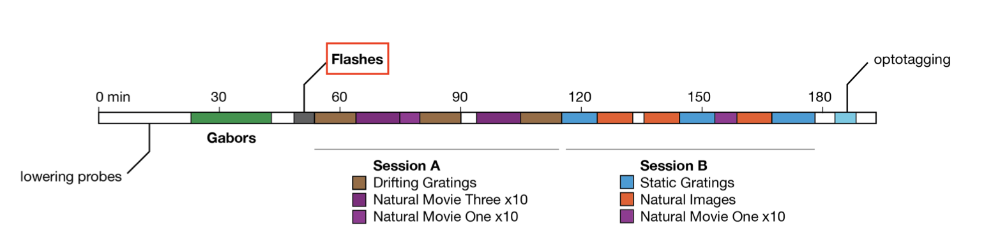

Download
This notebook can be downloaded as visual_coding-presenters.ipynb. See the button at the top right to download as markdown or pdf.
Exploring the Visual Coding Dataset#
This notebook has had all its explanatory text removed and has not been run. It is intended to be downloaded and run locally (or on the provided binder) while listening to the presenter’s explanation. In order to see the fully rendered of this notebook, go here
This notebook serves as a group project: in groups of 4 or 5, you will analyze data from the Visual Coding - Neuropixels dataset, published by the Allen Institute. This dataset uses extracellular electrophysiology probes to record spikes from multiple regions in the brain during passive visual stimulation.
To start, we will focus on the activity of neurons in the visual cortex (VISp) during passive exposure to full-field flashes of color either black (coded as “-1.0”) or white (coded as “1.0”) in a gray background. If you have time, you can apply the same procedure to other stimuli or brain areas.
For this exercise, you will:
Compute Peristimulus Time Histograms (PSTHs) and select relevant neurons to analyze using
pynapple.Fit GLMs to these neurons using
nemos.
As this is the last notebook, the instructions are a bit more hands-off: you will make more of the analysis and modeling decisions yourselves. As a group, you will use your neuroscience knowledge and the skills gained over this workshop to decide:
How to select relevant neurons.
How to avoid overfitting.
What features to include in your GLMs.
Which basis functions (and parameters) to use for each feature.
How to regularize your features.
How to evaluate your model.
At the end of this session, we will regroup to discuss the decisions people made and evaluate each others’ models.
# Import everything
import jax
import matplotlib.pyplot as plt
import numpy as np
import pynapple as nap
import nemos as nmo
# some helper plotting functions
from nemos import _documentation_utils as doc_plots
import workshop_utils
import matplotlib as mpl
from matplotlib.ticker import MaxNLocator
from scipy.stats import gaussian_kde
from matplotlib.patches import Patch
# configure plots some
plt.style.use(nmo.styles.plot_style)
Downloading and preparing data#
In this section, we will download the data from DANDI and extract the relevant parts for analysis and modeling. This section is largely presented to you as is, so that you can get to the substantive sections more quickly.
First we download and load the data into pynapple.
# Dataset information
dandiset_id = "000021"
dandi_filepath = "sub-726298249/sub-726298249_ses-754829445.nwb"
# Download the data using NeMoS
io = nmo.fetch.download_dandi_data(dandiset_id, dandi_filepath)
# load data using pynapple
data = nap.NWBFile(io.read(), lazy_loading=True)
# grab the spiking data
units = data["units"]
# map from electrodes to brain area
channel_probes = {}
for elec in data.nwb.electrodes:
channel_id = elec.index[0]
location = elec["location"].values[0]
channel_probes[channel_id] = location
# Add a new column to include location in our spikes TsGroup
units.brain_area = [channel_probes[int(ch_id)] for ch_id in units.peak_channel_id]
# drop unnecessary metadata
units.restrict_info(["rate", "quality", "brain_area"])
Now that we have our spiking data, let’s restrict our dataset to the relevant part.

During the flashes presentation trials, mice were exposed to white or black full-field flashes in a gray background, each lasting 250 ms, and separated by a 2 second inter-trial interval. In total, they were exposed to 150 flashes (75 black, 75 white).
flashes = data["flashes_presentations"]
flashes.restrict_info(["color"])
# create a separate object for black and white flashes
flashes_white = flashes[flashes["color"] == "1.0"]
flashes_black = flashes[flashes["color"] == "-1.0"]
Other stimulus classes?
As can be seen in the image above, there are many other stimulus types shown in this experiment. If you finish analyzing the flashes and want to look at one of the others, you can do so by grabbing the corresponding IntervalSet from the data object; they are all named {stim_type}_presentations, where {stim_type} may be flashes, gabors, static_gratings, etc.
Let’s visualize our stimuli:
n_flashes = 5 n_seconds = 13 offset = .5
start = data[“flashes_presentations”][“start”].min() - offset end = start + n_seconds
fig, ax = plt.subplots(figsize = (17, 4)) for flash, c in zip([flashes_white, flashes_black], [“silver”, “black”]): for fl in flash[:n_flashes]: ax.axvspan(fl.start[0], fl.end[0], color=c, alpha=.4, ec=c)
plt.xlabel(“Time (s)”) plt.ylabel(“Absent = 0, Present = 1”) ax.set_title(“Stimuli presentation”) ax.yaxis.set_major_locator(MaxNLocator(integer=True))
plt.xlim(start-.1,end)
## Preliminary analyses and neuron selection
From here on out, you will write the code yourself. This first section will involve us doing some preliminary analyses to find the neurons that are most visually responsive; these are the neurons we will fit our GLM to.
First, let's construct a {class}`~pynapple.IntervalSet` called `extended_flashes` which contains the peristimulus time. Right now, our `flashes` `IntervalSet` defines the start and end time for the flashes. In order to make sure we can model the pre-stimulus baseline and any responses to the stimulus being turned off, we would like to expand these intervals to go from 500 msecs before the start of the stimuli to 500 msecs after the end.
This `IntervalSet` should be the same shape as `flashes` and have the same metadata columns.
```{code-cell} ipython3
dt = .50 # 500 ms
start = flashes.start - dt # Start 500 ms before stimulus presentation
end = flashes.end + dt # End 500 ms after stimulus presentation
extended_flashes = nap.IntervalSet(start, end, metadata=flashes.metadata)
If you have succeeded, the following should pass:
assert extended_flashes.shape == flashes.shape
assert all(extended_flashes.metadata == flashes.metadata)
assert all(extended_flashes.start == flashes.start - .5)
assert all(extended_flashes.end == flashes.end + .5)
Now, create two separate IntervalSet objects, extended_flashes_black and extended_flashes_white, which contain this info for only the black and the white flashes, respectively.
extended_flashes_white = extended_flashes[extended_flashes["color"] == "1.0"]
extended_flashes_black = extended_flashes[extended_flashes["color"] == "-1.0"]
# OR
dt = .50 # 500 ms
start = flashes_white.start - dt # Start 500 ms before stimulus presentation
end = flashes_white.end + dt # End 500 ms after stimulus presentation
extended_flashes_white = nap.IntervalSet(start, end, metadata=flashes_white.metadata)
start = flashes_black.start - dt # Start 500 ms before stimulus presentation
end = flashes_black.end + dt # End 500 ms after stimulus presentation
extended_flashes_black = nap.IntervalSet(start, end, metadata=flashes_black.metadata)
# This should all pass if you created the IntervalSet correctly
assert extended_flashes_white.shape == flashes_white.shape
assert all(extended_flashes_white.metadata == flashes_white.metadata)
assert all(extended_flashes_white.start == flashes_white.start - .5)
assert all(extended_flashes_white.end == flashes_white.end + .5)
assert extended_flashes_black.shape == flashes_black.shape
assert all(extended_flashes_black.metadata == flashes_black.metadata)
assert all(extended_flashes_black.start == flashes_black.start - .5)
assert all(extended_flashes_black.end == flashes_black.end + .5)
Now, select your neurons. There are four criteria we want to use:
Brain area: we are interested in analyzing VISp units for this tutorial
Quality: we will only select “good” quality units. If you’re curious, you can (optionally) read more how about the Allen Institute defines quality.
Firing rate: overall, we want units with a firing rate larger than 2Hz around the presentation of stimuli
Responsiveness: we want units that actually respond to changes in the visual stimuli, i.e., their firing rate changes as a result of the stimulus.
Create a new TsGroup, selected_units, which includes only those units that meet the first three criteria, then check that it passes the assertion block.
Restrict!
Don’t forget when selecting based on firing rate that we want neurons whose firing rate is above the threshold around the presentation of the stimuli! This means you should use restrict()! If only we had a useful IntervalSet lying around…
Restrict around stimuli presentation#
selected_units = selected_units.restrict(extended_flashes)
Filter according to criterion 3#
selected_units = selected_units[(selected_units[“rate”]>2.0)]
```{code-cell} ipython3
:tags: [render-all]
assert len(selected_units) == 92
Now, in order to determine the responsiveness of the units, it’s helpful to use the compute_perievent() function: this will align units’ spiking timestamps with the onset of the stimulus repetitions and take an average over them.
Let’s use that function to construct two separate perievent dictionaries, one aligned to the start of the white stimuli, one aligned to the start of the black, and they should run from 250 msec before to 500 msec after the event.
# Set window of perievent 500 ms before and after the start of the event
window_size = (-.250, .500)
# Re-center timestamps for white stimuli
# +50 because we subtracted 500 ms at beginning of stimulus presentation
peri_white = nap.compute_perievent(timestamps=selected_units,
tref=nap.Ts(extended_flashes_white.start +.50),
minmax=window_size)
# Re-center timestamps for black stimuli
# +50 because we subtracted 500 ms at beginning of stimulus presentation
peri_black = nap.compute_perievent(timestamps=selected_units,
tref=nap.Ts(extended_flashes_black.start +.50),
minmax=window_size)
# OR
peri_white = nap.compute_perievent(timestamps=selected_units,
tref=nap.Ts(flashes_white.start),
minmax=window_size)
peri_black = nap.compute_perievent(timestamps=selected_units,
tref=nap.Ts(flashes_black.start),
minmax=window_size)
assert len(peri_white) == len(selected_units)
assert ([p.ref_times for p in peri_white.values()] == flashes_white.start).all()
assert len(peri_black) == len(selected_units)
assert ([p.ref_times for p in peri_black.values()] == flashes_black.start).all()
Visualizing these perievents can help us determine which units to include. The following helper function should help.
# called like this, the function will visualize the first 9 units. play with the n_units
# and start_unit arguments to see the other units.
plot_raster_psth(peri_white, selected_units, "white", n_units=9, start_unit=0)
plot_raster_psth(peri_black, selected_units, "black", n_units=9, start_unit=0)
You could manually visualize each of our units and select those that appear, from their PSTH to be responsive.
However, it would be easier to scale (and more reproducible) if you came up with some measure of responsiveness. So how do we compute something that captures “this neuron responds to visual stimuli”?
You should be able to do this using a function that iterates over the peri_white and peri_black dictionaries, returning a single float for each unit.
Let’s aim to pick around 20 neurons.
If you’re having trouble coming up with one that seems reasonable, expand the following admonition.
How to compute responsiveness?
Try defining responsiveness as the normalized difference in average firing rate between during stimulus presentation and before the stimulus was presented.
We can use restrict() together with np.mean to compute the average firing rates above, and then combine them.
post_presentation_avg :
Average firing rate during presentation (250 ms) of stimulus across
all instances of stimulus.
pre_presentation_avg :
Average firing rate prior (250 ms) to the presentation of stimulus
across all instances prior of stimulus.
responsiveness :
abs((post_presentation_avg - pre_presentation_avg) / (post_presentation_avg + pre_presentation_avg))
Larger values indicate higher responsiveness to the stimuli.
Parameters
----------
perievents : TsGroup
Contains perievent information of a subset of neurons
bin_size : float
Bin size for calculating spike counts
Returns
----------
resp_array : np.array
Array of responsiveness information.
"""
resp_dict = {}
resp_array = np.zeros(len(perievents.keys()), dtype=float)
for index, peri in enumerate(perievents.values()):
# Count the number of timestamps in each bin_size bin.
peri_counts = peri.count(bin_size)
# Compute average spikes for each millisecond in the
# the 250 ms before stimulus presentation
pre_presentation = np.mean(peri_counts, 1).restrict(nap.IntervalSet([-.25,0]))
# Compute average spikes for each millisecond in the
# the 250 ms after stimulus presentation
post_presentation = np.mean(peri_counts, 1).restrict(nap.IntervalSet([0,.25]))
pre_presentation_avg = np.mean(pre_presentation)
post_presentation_avg = np.mean(post_presentation)
responsiveness = abs((post_presentation_avg - pre_presentation_avg) / (post_presentation_avg + pre_presentation_avg))
resp_array[index] = responsiveness
return resp_array
responsiveness_white = get_responsiveness(peri_white) responsiveness_black = get_responsiveness(peri_black)
Get threshold for top 15% most responsive#
thresh_black = np.percentile(responsiveness_black, 85) thresh_white = np.percentile(responsiveness_white, 85)
Only keep units that are within the 15% most responsive for either black or white#
selected_units = selected_units[(responsiveness_black > thresh_black) | (responsiveness_white > thresh_white)]
Let's visualize the selected units PSTHs to make sure they all look reasonable:
```{code-cell} ipython3
:tags: [render-all]
print(f"Remaining units: {len(selected_units)}")
peri_white = {k: peri_white[k] for k in selected_units.index}
peri_black = {k: peri_black[k] for k in selected_units.index}
plot_raster_psth(peri_black, selected_units, "black", n_units=len(peri_black))
plot_raster_psth(peri_white, selected_units, "white", n_units=len(peri_white))